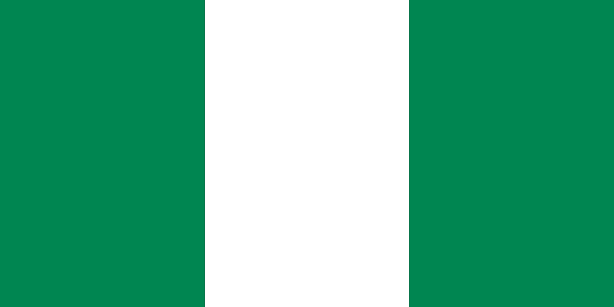

<!--
  Generated template for the NigeriaPage page.

  See http://ionicframework.com/docs/components/#navigation for more info on
  Ionic pages and navigation.
-->
<ion-header>

  <ion-navbar>
    <ion-title>Nigeria</ion-title>
  </ion-navbar>

</ion-header>


<ion-content padding>
    <br>
    <span>Nome: Nigeria</span><br>
    <span>Capital: Abuja</span><br>
    <span>Região: Oeste</span><br>
</ion-content>
